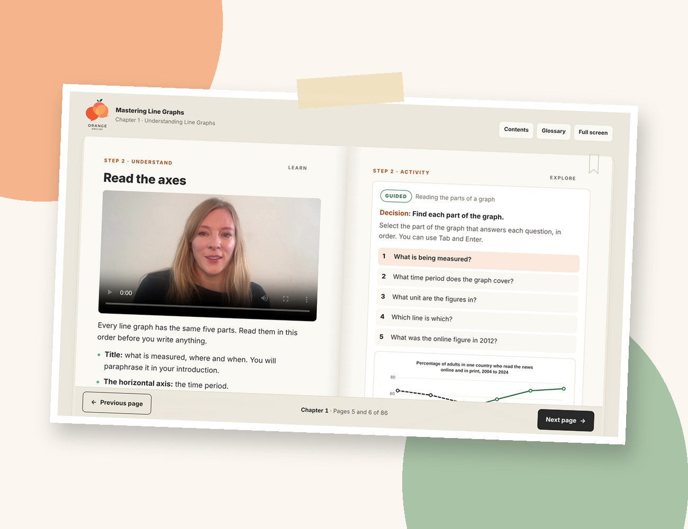

免费 · 11月27日上线
免费雅思小作文课程：线图（Line Graphs）
学会用考官想看到的方式描述线图。6个模块、18节短课，短视频加互动练习，由前雅思考官设计。完全免费，11月27日（周五）开放。

适合谁？
这门课适合所有准备雅思学术类（IELTS Academic）、想要一套清晰可靠的线图写法的考生。
学术类考生
学术类写作 Task 1 一定是图表、表格、地图或流程图，而线图是最常见的题型之一。
自学的同学
喜欢按自己的节奏学习？课程可以完全独立完成，答案和参考指南都已包含。
工作繁忙的人
每节课都很短，午休或晚上用电脑或手机就能学。
二战、三战考生
写作卡在6分？小作文往往是最容易丢分的地方，也是提分最快的部分之一。
刚接触雅思写作
从这里开始，学会题型、关键表达，以及一个可以反复使用的清晰结构。
课程内容
6个模块，18节短课
一步一步，从读懂图表到写出完整、条理清晰的答案。
互动练习
边学边练，系统会立即检查你的答案并解释原因。
可打印的参考指南
写作时把关键表达和句型放在手边。
限时练习
最后完成一篇20分钟限时写作，和真实考试一样。
考官视角
了解考官在小作文里看什么，从清晰的概述段到准确的数据描述。
免费，随时学
几分钟就能报名，想什么时候回来学都可以。
为什么跟我学
我知道评分标准在实际打分中是怎么用的，所以能准确告诉你什么能让分数提高。
免费报名
在报名页面留下你的邮箱，我会发给你免费的小作文练习包：10张图表，用来练习开头段和概述段，附答案。你也会获得线图课程的免费名额（11月27日开放），以及1月份完整雅思写作课的最新消息。
不会发垃圾邮件，随时可以退订。
常见问题
课程真的免费吗？
是的，线图课程完全免费。你只需要在我的课程平台注册一个免费账号就能报名。
适合学术类还是培训类？
学术类（IELTS Academic）。线图只出现在学术类写作 Task 1，培训类（General Training）不考。
需要多长时间学完？
18节课都很短，你可以一口气学完，也可以分几周慢慢学，完全由你决定。
以后会有完整的写作课吗？
会的。完整的雅思写作课程将在2027年1月上线，涵盖小作文和大作文的所有题型。在报名页面加入等候名单，就能第一时间收到消息。
可以得到老师的个人批改吗？
这门课是自学课程。如果你希望我亲自批改你的小作文或大作文，可以看看我的雅思一对一课程。
课程是中文授课吗？
不是，课程全程英文授课，视频有英文字幕。用英文学英文写作，也是在练习考试时用英语思考。